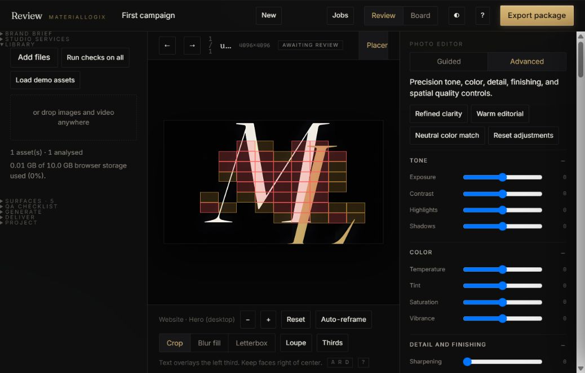
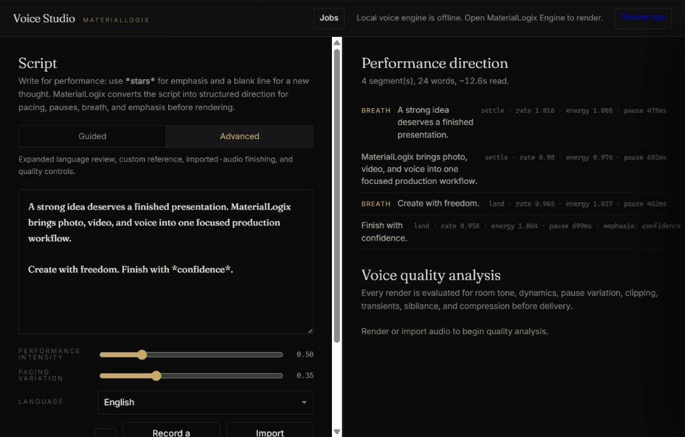

MaterialLogix unifies intelligent photo finishing, video production, and voice direction in one Windows studio—with precision editing, placement review, recoverable local projects, and clearly labeled cloud capacity.
Local by default. Cloud processing begins only when you choose it and approve the quoted usage.
Open MaterialLogix Studio on Windows, activate your signed license, and render Photo, Video, and Voice work on your own GPU. Online licenses revalidate periodically with a three-day offline grace period. Browser and cloud workflows are optional and clearly labeled.
The desktop package includes the Studio interface and local engine bridge. Photo upscaling, video processing, voice rendering, project media, and voice packs remain on the device. A cloud job begins only after you choose the cloud lane and see its usage cost.
Download the Windows preview packet now. It includes the Studio, local engine bridge, lightweight application runtime, Photo upscaler, and one-step installers for the larger Video and Voice runtimes. This is a portable preview ZIP, not yet a signed installer.


Each workflow is useful on its own. Together they share one project system, one local engine, and one quality-control standard from first concept through final delivery.
Import or generate campaign stills and video. Approve per placement — a shot can clear the website hero and fail TikTok in the same pass — then export a package a media buyer can run without a single question.
Compile the complete source package once, render locally or send one cloud job, track progress in the Jobs rail, and approve the finished motion asset against every placement where it will run.
Turn approved copy into a directed performance. Twelve house profiles, structured pacing and emphasis, local voice finishing, and objective quality analysis guide every take.
These quality-assurance outputs were created by MaterialLogix itself—not substituted marketing generators. The public voice sample ran through local synthesis and voice finishing; the photo proof ran through the local 4× upscaler.
House voices are performance directions from local open models; personal voice packs require your own or released recordings. MaterialLogix does not scrape public people to imitate them.
Generated by the bundled Real-ESRGAN workflow during application quality assurance.
MaterialLogix combines measurable quality signals with human approval. Delivery-critical failures can block export; assistive indicators direct closer editorial review.
Face detection maps every face against each platform's real UI. A face more than half-buried under TikTok's caption block stops the export.
A crop that would exceed the approved upscale threshold is stopped with the exact source and delivery dimensions.
Perceptual fingerprints help prevent near-duplicates of rejected results from returning to the approval queue.
Regions with unusual losses in fine detail are flagged for magnified review before approval.
Platforms duck or reject mis-leveled audio. We measure to the broadcast standard and normalize on render.
Digital-zero silence, overly uniform dynamics, regular pause timing, clipping, and sibilance are measured before delivery.
360° capture is tracked angle by angle. Missing 40° of someone's left side? You'll know before generation, not after.
Approving without accessibility copy is a block. Content credentials are read from the file, never guessed.
Choose local mode to render on hardware you own—the laptop in front of you or an approved machine on your network. In local mode, project media and consented voice references remain on that device. Cloud mode is a separate, explicitly selected workflow for additional capacity: the Studio shows the execution location, uploads one compiled job, quotes the usage, and waits for approval before processing.
Explore the complete quality workflow with marked previews. Paid plans unlock clean output and commercial production allowances. Choose monthly billing or save with fixed three-, six-, or twelve-month terms.
Lite: $9/mo · $24/3mo · $46/6mo · $81/yr. Voice Studio: $14/mo · $38/3mo · $71/6mo · $126/yr. Review: $32/mo · $86/3mo · $163/6mo · $288/yr. Complete: $36/mo · $97/3mo · $184/6mo · $324/yr. Pro: $59/mo · $159/3mo · $301/6mo · $531/yr. License keys carry the term and expire with a 3-day grace.
What meters, and where it stopsEvery paid plan includes a monthly production allowance: one image render or one voice minute uses one unit, and one video minute uses four. Local upscaling is unlimited on paid plans and never draws cloud credit. Cloud processing uses a separate prepaid balance with a visible quote and a hard stop at zero.
| Free | Voice Studio | Review | Complete | |
|---|---|---|---|---|
| Monthly units (image = 1 · voice-minute = 1 · video-minute = 4) | — | 500 | 500 | 1,000 |
| Proof exports (image: watermark+960px · video: moving watermark + audible stamps, 720p · voice: spoken stamps ×3) | unlimited | unlimited | unlimited | unlimited |
| Render lane | preview (2× upscale, 60-word stamped voice) | standard 4× | standard 4× | standard 4× |
| Cloud image upscale | $0.10 per image · prepaid · price confirmed before submission | |||
| Cloud voice render | $0.25 per rendered minute · one compiled job · total duration rounded up once to 10 seconds | |||
| Cloud video upscale | $3.00 per output minute beyond included plan minutes · one compiled package · $0.50 per 10-second block · five-minute job cap | |||
| Voice packs | — | 3 | — | 5 |
| Client review links | — | — | 10 live | 25 live |
| Pay-per-export (no subscription) | +$5 per 100 extra units on any plan · cloud render credits prepaid separately — never auto-billed | |||
Cloud credits start in $10 prepaid packs. MaterialLogix compiles the complete upload into one job; it does not bill individual video frames. The app totals package duration, rounds once to the next 10 seconds, shows and reserves the maximum charge, then settles the delivered job. Balances stop at zero; there is no automatic overage billing.
Download MaterialLogix Studio for Windows, sign in to activate the device, and add only the engines you use. The browser demo shows the workflow; the installed application performs private local production.
Not in Local mode. Project media, renders, and voice packs remain on your device. Cloud mode is a separate, clearly labeled action: the app shows the execution location and maximum prepaid charge before you confirm the upload.
No personal information, creative work, prompts, media, or account-level records are sold. Account signup offers separate, off-by-default choices for optional technical diagnostics and product research. A third choice can allow only grouped, de-identified trends to appear in market insights that may be sold or licensed. You can decline everything optional and change your choices later.
Only voices with consent: your own, or talent who signed a release. The capture flow is built around that rule, and we will not add scraping features. Your voice pack is yours — we never train on it, and it never leaves your machine unless you send a cloud job.
Yes. Add the companion interface from the browser to your home screen, then use it for capture, review, approvals, and comments while the authorized Windows application handles local GPU work on the same network.
The current portable Windows packet is about 55 MB and includes the local application runtime plus Photo upscaling. The complete Video runtime is approximately 700 MB because it includes FFmpeg, transcription, a speech model, and motion interpolation. The Voice runtime and model weights require several GB. Video and Voice install only when you choose those capabilities.
The Studio pauses the billable action and explains the available next step. Production units and cloud credit never continue past a cap silently. Paid plans retain unlimited local upscaling even when the monthly production allowance has been used.